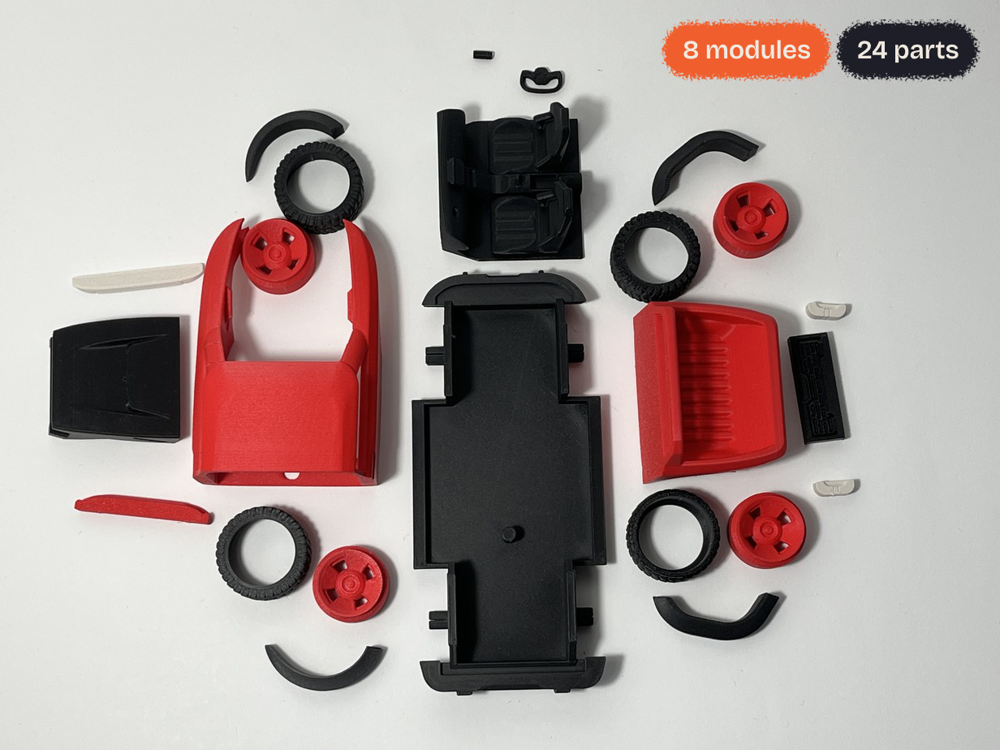
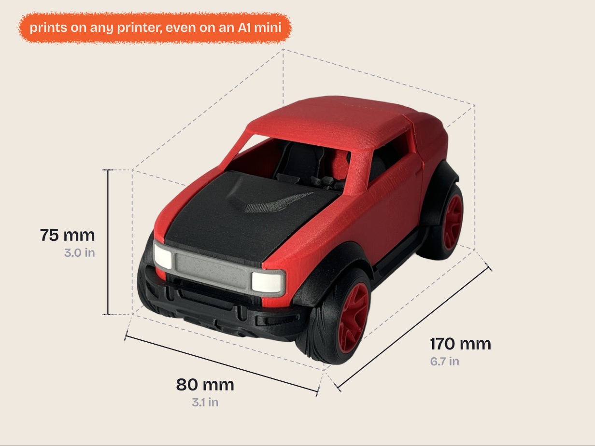
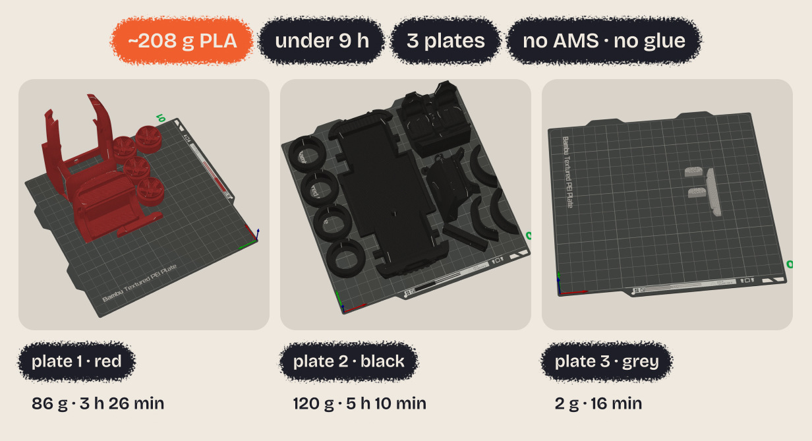
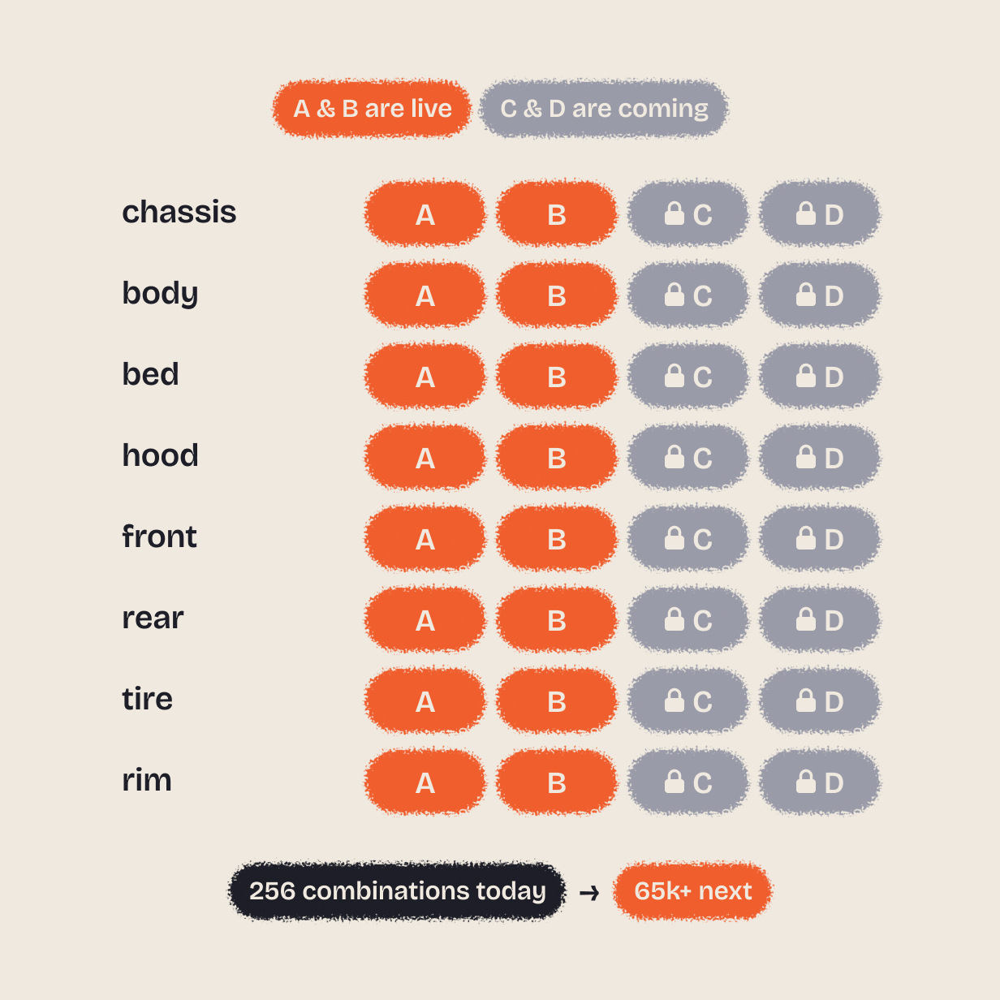
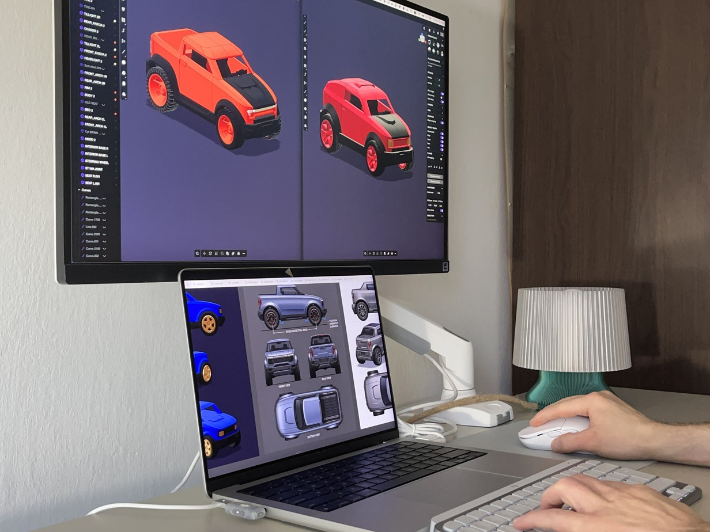
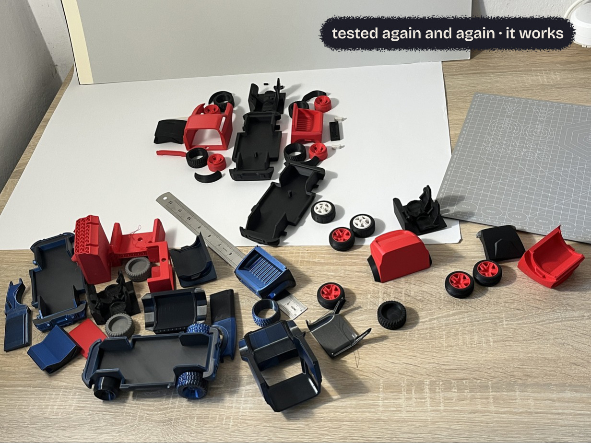

Modular toy trucks. Pick every part, print at home, snap it together. No supports, no glue, no AMS.
Follow to get the launch date first and early-bird access.
One kit, two trucks and everything in between. 8 parts of the truck, 2 options each. Swap one part and it's a different truck.
Choose A or B for chassis, body, bed, hood, front, rear, tires and rims, and watch the truck change live.
The print files for one truck: 8 modules, 24 parts. Download, print, build.

Press fit. No glue, no screws, no electronics: print the parts and push them together.
Our first free configurator: low-poly trucks, 5 options per part, 78,125 combinations.
Rounder shapes, more detail, same modular system.
It's a toy. Built to be driven, dropped, taken apart and rebuilt.
170 × 80 × 75 mm: prints on any printer, even an A1 mini.

One truck takes about 208 g of PLA, under 9 hours, 3 plates.

Options A and B come with the kit. C and D are next if people want them: 65,536 trucks when the set is complete.

The trucks are real: designed, printed and played with. Your backing decides how fast the system grows and which options come next.
Molten Garage is one designer making trucks you print instead of buy. Swap the headlights: new truck. Swap the wheels: another one. Like Lego, only simpler, and the parts come out of your own printer. Good hands-on time for kids, and for anyone who likes building things.


We post builds, prints and process on Instagram: @moltengarage
Follow to get the launch date first.